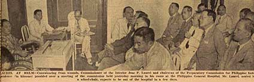

|
j
a v a s c r i p t |
July 6, 1943
Tribune: "PCPI committees formed" — at a 40-minute meeting at Laurel's room in the hospital. Roxas was assigned to two committees (just to keep up appearances). There's a picture with some terrific faces, none with a smile, and Roxas isn't in it.

PCPI Meeting
Editorial: "We must win over minority." Maybe only a minority is actively fighting, but they have the sympathy and support of the majority. Duran: "Although [the Nanking Government] declared war against the Anglo-Saxon combine, she has not been required to send any troops to help Nippon." Wrong — the Japanese told us that Nanking troops are fighting against Chungking. Does Tojo expect us to declare war but not mobilize? Duran again: "The U.S. plunged into this war with 50,000 Filipino youths to defend her integrity in this part of the globe." Wrong again — the Filipinos fought willingly to defend their own country, and have been fighting from every mountain and island since MacArthur left. Duran is so afraid for his life that he no longer drops in at the Astoria for a cup of coffee. He sends someone to get it for him instead. Schaer hasn't seen him since he returned from Japan. Duran's sons, incidentally, are named Togo and Kuroki after the Japanese Admiral and General. |
|
|
|
|